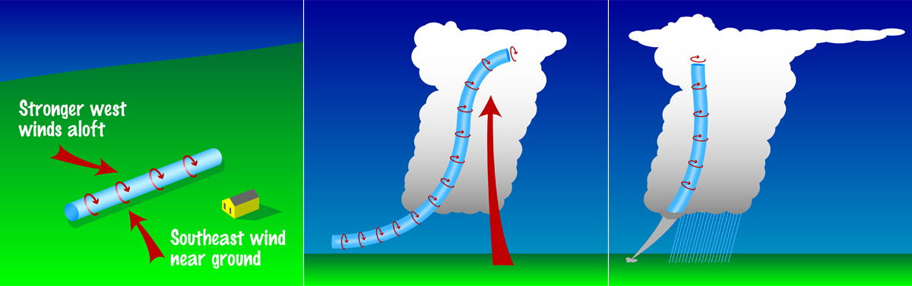
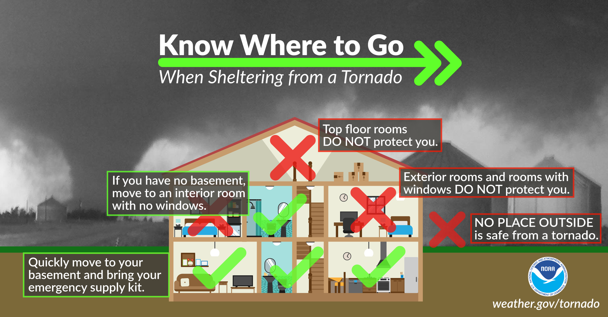

Tornadoes are powerful and destructive natural phenomena. They are characterized by a twisting, funnel-shaped cloud. This section will provide you with valuable information on tornadoes and how to stay safe during a tornado event.
People near the center of the Tornado Alley would be most at risk due to the right ingredients mixing just where they are! The state with the highest amount of tornadoes is Texas. Tornadoes are also very strong in this part of the U.S. causing more damage, and life-ending scenarios.
People who are older or very young would also be at risk, younger people might be less educated and older might have a disability and or would not be able to move as much or run.
Tornadoes mostly occur in the middle of the U.S, this region is nicknamed Tornado Alley. Tornado Alley can be the whole state or part of it. These states are Texas, Oklahoma, Kansas, Nebraska, South Dakota, Indiana, Missouri, Iowa, Illinois, Ohio, and a very small sliver of Minnesota. Even though this is the most common place, they happen all over the U.S, and even the whole world.
Most places out of Tornado Alley will not get as many tornadoes and definitely ones not as strong. Tornado Alley can cost a lot of money because of the severe storms that can also occur, tornado or not. The harm would be mostly damage to homes and not lives taken, the states have many precautions to protect people. Money is the issue.
We predict tornadoes and other storms by using radar. Very powerful computers called supercomputers or even quantum computers could increase the time it takes to warn before a storm or tornado actually occurs. We are actively still figuring out how tornadoes work and even form.
We warn by sending notifications to smart/cell phones, we also make alerts on the TV and radios. Sirens are also tested every first Wednesday in the month. Combined, it is very hard to not survive a tornado. Weather radios placed in every home are also very helpful
We can’t really reduce much damage from tornadoes, but here are some simple ideas. Reinforced buildings and walls may protect some buildings. Metal sheet covers that can be easily placed in front of windows as a very important protection for people. There are many more ideas that could be implemented but could be costly and difficult to place in most buildings and homes. Protecting lives is a lot better and easier!
Groups like NOAA, and local radio stations are a very big help in warning. Neighbors can also help warn surrounding people. Anyone able to warn people or help out is very good.
Fines for people who don’t have warning system in buildings or houses. Mandatory to teach children and un-teached adults about what to do
Time: Tornadoes usually occur in 4-9PM, they can occur anytime of the day though. Date: Tornadoes once again usually occur May into early June, although this can happen out of these months but it is more rare. The worst part of tornadoes is the flying debris, most deaths by tornadoes are actually caused by this! The after-effects and damaged buildings are also very bad. They can be dangerous, and very expensive to fix. Tornadoes usually start by very powerful storms called supercells. These storms are also very dangerous because of high winds, dangerous lightning, heavy hail, and large amounts of rain that could also cause flooding. Tornadoes start because warm air rises and cold air sinks along with rain or hail. All these conditions can result in rolling or spinning air currents inside the cloud. Whilst it starts out horizontal it can easily turn vertical and drop out of the cloud, resulting in a tornado. In the middle of a tornado, flying debris are the highest cause of death and injury. The high winds are also very bad causing damage to structures and even making them collapse. At the end of a tornado's life, it spins out and dissipates. Life then becomes expensive and hard, many people end up injured, without jobs and or homeless.
There are many scenarios and things that can play out, but here is a guide for the most common places and scenarios. If outside, it is best to find a low ditch and lay there. If in a house, if you have a dedicated storm shelter, use that. If you don't have one you can use a basement or bathrooms. If in a school, they should have plans and dedicated spots to hide.
The EAS (Emergency Alert System) is placed on TV’s and will come on for almost any hazard not including tornadoes the stakeholders are almost everybody. Weather radios were also very popular among most stakeholders. Basements not really meant for shelter are common among richer stakeholders. As stated before, protecting your house or building from a tornado is very difficult.
Hopefully people who are injured or hurt or at loss should go to relief groups and the hospital. We would hope the government would also give lots of money to help people (most likely not going to happen) everybody should help each other and if they need help go and get it right away.
Here are some ways different people can help.
Schools can have monthly drills on tornado safety. They can also have designated spots to take cover from different areas.
Citizens can help the elderly, as they are the most prone to disasters like such. They can also volunteer for placing alarms in homes or helping out with drills.